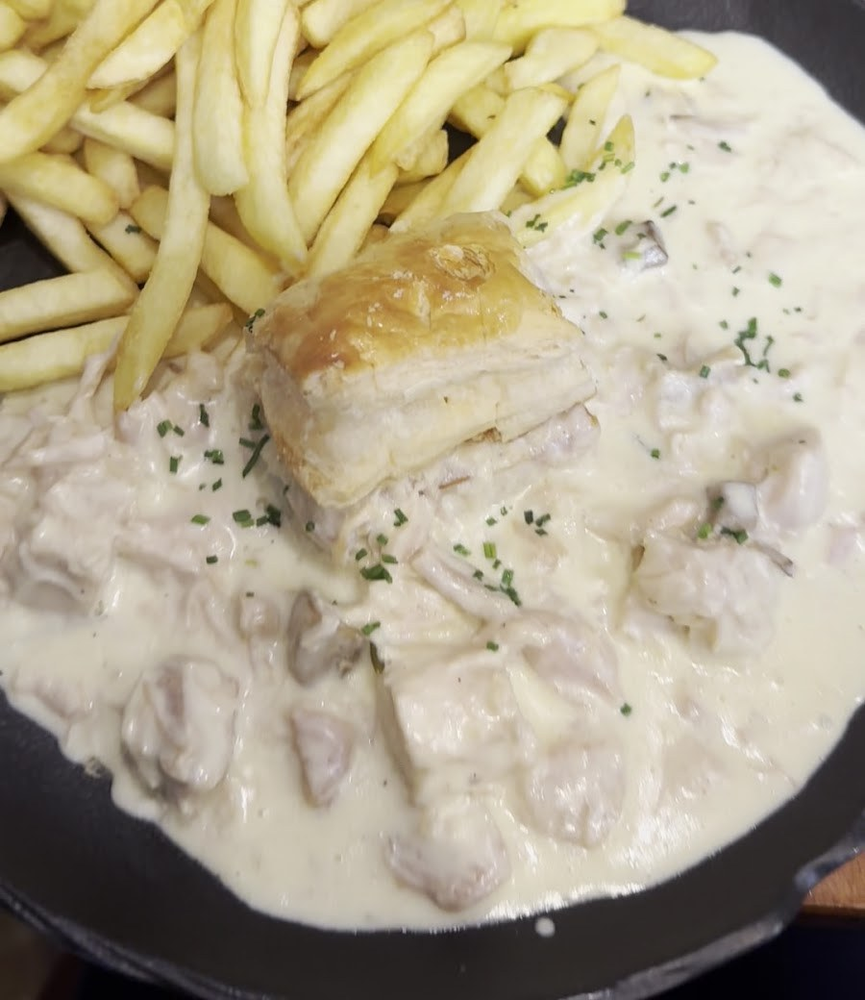
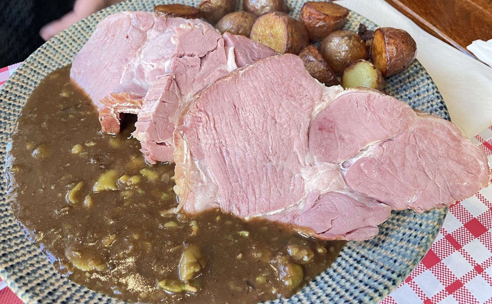
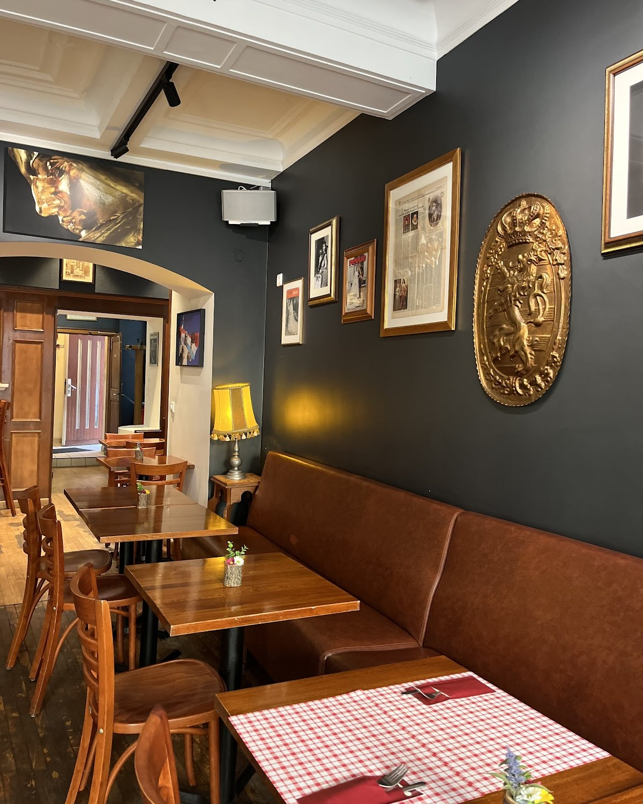

À la une
Le vrai Luxembourg à table, face au Palais grand-ducal.
Boiseries, portraits encadrés, banquettes de cuir et l’accueil de Heidi, qui a donné son surnom à la maison.
Au menu, les classiques luxembourgeois : Bouneschlupp, Kniddelen mat Speck, Judd mat Gaardebounen, Paschtéit. Et la brasserie : tartare, cordon bleu, burgers et pinsa.

En images





Carnet d’adresses
- Adresse
- 24, rue du Marché-aux-Herbes
L-1728 Luxembourg - Téléphone
- +352 27 74 30 60
- Commander
- Livraison sur Wolt
- Réseaux
Pour venir
En face du Palais grand-ducal et de la Chambre des députés.